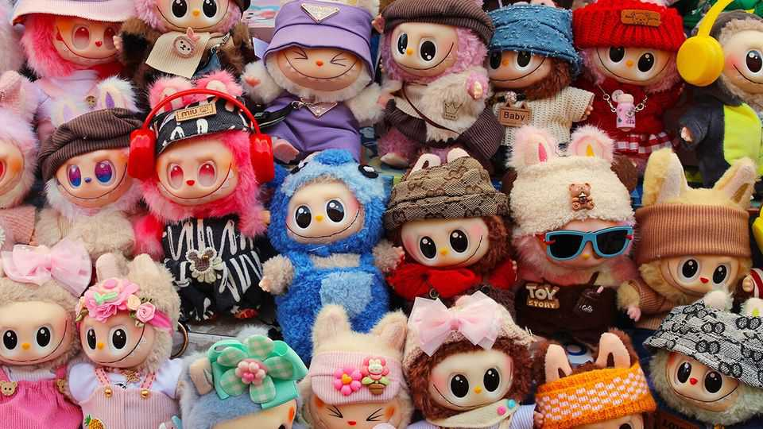

Business | Copycat crisis

Chinese officials are at war with a fiendish little creature that stands about six inches tall and bears a striking resemblance to a Labubu doll, the sensational plush toy created by China’s Pop Mart. Factories around the country are churning out knock-offs known as “Lafufus”. The infestation has prompted a nationwide “Lafufu-catching” campaign as officials conduct raids and shut down online shops that sell them. Shanghai police hit a jackpot in July when they discovered a local company sitting on a stash of the fake toys worth 12m yuan ($1.7m).
China has long been a counterfeiting hub. Shoppers do not have to look far to find fake Nestlé food seasoning or imitation Nike sneakers. And brands are not the only form of intellectual property (IP) that is readily pilfered. Foreign multinationals that set up shop in the years after China opened its economy to the world often complained of their trade secrets being stolen. General Motors, an American carmaker, discovered in 2003 that a Chinese partner was rolling out a model strikingly similar to one of its own. Kawasaki, a Japanese industrial giant, and Siemens, a German one, believe their technology was nabbed to help build China’s extensive high-speed rail network.
In the past few years, however, lax protection of trademarks and patents has become a growing problem for the many Chinese companies that have emerged as IP powerhouses in their own right. Lafufus are but one example. Makers of everything from smartphones and motorbikes to solar panels and batteries are battling to protect their IP. The fight is going global.
Chinese courts have been inundated with IP cases, which now exceed 550,000 a year, making the country the world’s most litigious when it comes to such disputes. Judges often have to work at a speedy rate of a case per day. Shanghai is typically the preferred location because its judges are well versed in relevant laws. But companies and lawyers find the process in the city excruciatingly slow. It can take three months simply for a case to appear on a court’s docket.
Excess industrial capacity has fuelled the problem, as owners of idle factories look for ways to put them to use. Li Hongjiang of Guantao, a law firm in Beijing, says he has been representing a motorcycle-maker in the south-western city of Chongqing in its fight against factories copying its bikes. The city is a hub for vehicle manufacturing, but has many plants gathering cobwebs. As soon as he wins a case against one factory another starts making fakes, he says.
China’s copycats are not just menacing their countrymen. Excess manufacturing capacity has also led to a flood of imitation goods abroad, leading to more clashes with Western companies whose IP has been pinched. In America, for example, patent-related cases involving Chinese businesses surged by 56% in 2023, according to data collected by GEN, another Chinese law firm. Many of these centred on merchants selling products on Amazon, an American e-commerce platform. But cases linked to communications and electronics equipment were also common.
These clashes partly reflect a lack of experience with stricter IP protections abroad. Often Chinese companies will enter a country without running “freedom-to-operate” assessments, which look at whether a product will infringe patents in a new market, says Xia Feng of GEN. More recently, some have started hiring senior in-house lawyers with responsibility for international IP disputes; they “pay really well for these positions”, Mr Xia adds.
In a break from the past, though, it is increasingly Chinese companies that are the ones accusing foreign competitors of stealing their ideas. Luckin, a coffee chain, successfully sued a business in Thailand that had opened cafés under the same name with an almost identical logo. Trina Solar, a Chinese renewable-energy company, has sued Canadian Solar, a rival based in Ontario that makes most of its solar panels in China, for IP infringements in America. As Chinese businesses venture abroad, expect more such battles. ■
To track the trends shaping commerce, industry and technology, sign up to “The Bottom Line”, our weekly subscriber-only newsletter on global business.